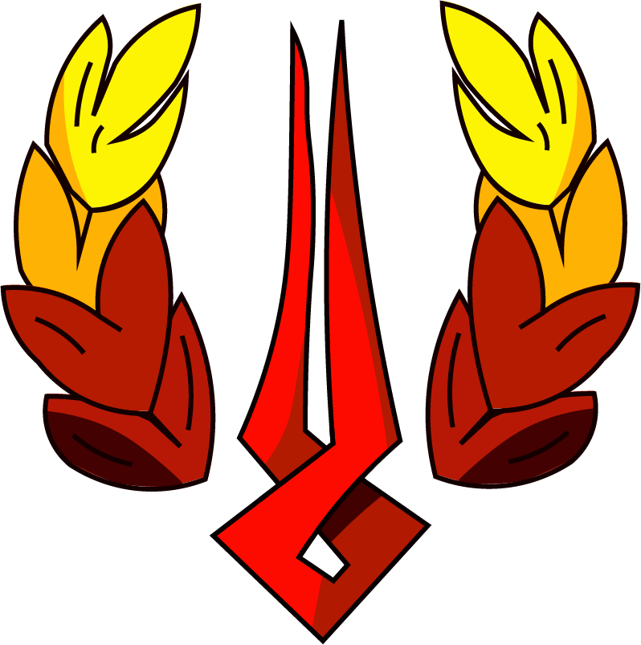
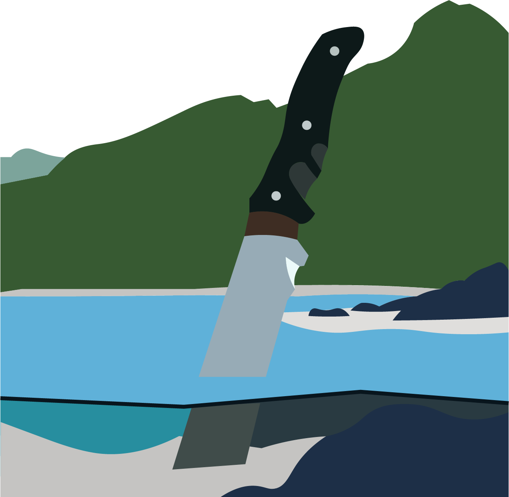

Reviews

Hades
- Genre: Roguelite
- Developer: Supergiant Games
- Publisher: Supergiant Games
- Type: Indie
- Score: 8/10
Your rating is: /10
Hades is one of if not the best roguelite game on the market as it perfectly combines aspects of gameplay, style, music, and story. The characters throughout the game are interersting, unique and each have thier own story to tell. The bosses in the game are enjoyable to fight along with the enemies. The combat could be better in my opinion
This game is the 4th highest rated game on steam and I would highly recomend it to anyone who enjoys roguelikes. This game isn't all that difficult at the start but as you progress it gets far more difficult and it is nice to see yourself adapt to the different enemies and gameplay mechanics
Terraria
- Genre: Open world survival craft
- Developers: Relogic
- Publishers: Relogic
- Type: Indie
- 10/10
This game is the perfection of the survival genre but it is more a boss rush game half way through. Terraria has an incredibly good progression system with various differnt classes which you can use to kill enemies and bosses with along with having a simple yet extremely fun combat and movement system. Terraria doesn't lean all that much into the survival craft genre as you become extremely powerful in the end game but the open world aspect is extremely gun as you get to explore caves and discover the world that you generate. Terraria also uses a seed system to give each individial person thier own unique world.
Terraria doesn't actually have a plot unlike most games but it does have lore which has been given to the public but it doesn't really change how you play or experience the game.
This game is also not for the kind of person who hates grinding as this game will have you spending an hour or 5 trying to get one item. You also need to have the Terraria wiki open at all times when playing this game as you will be checking drop chances, how to summon bosses and how to progress in general throughout the game which some people may find annoying, but i found it to be just another charm of the game.
Halo
- Genre: FPS
- Developers: Bungie, 343 industries
- Publishers: Microsoft
- Type: AAA
- 10/10
Halo is a game which I have spent an unhealthy amount of time playing and for good reason as it is one of if not the best shooter games in history. With the franshise being 23 years old this year it has amassed a huge devoted community which isn't extremely toxic like others (sea of thieves). Halo has 13 games in its franchise that I know of with some being better than others but the ones I'l be focusing on will be Halo ce, 2, 3, 3 odst, reach, 4, 5, and infinite
Halo ce: (Combat evolved) is the first game in the franchise and is incredibly good but you need to be consious of how old it is when playing. DO NOT PLAY THE ANIVERSARY VERSION it completely ruins the games atmosphere.
Halo 2: was extremely popular and is the most sold game for the original Xbox and in my opinion is a downgrade of the first game gameplay wise but its plot is incredibly good and with the remaster it looks beautiful.
Halo 3: is just the best of the trilogy and perfecty combines all the aspects of the previous games 10/10.
Halo 3 ODST: is a verson of Halo 3 where you play during the events of Halo 2 but as an odst and it is just very well made.
Halo Reach: is my personal favourite as it has incredibly well made gameplay and the story is beautiful. This game is a lot darker than any other game since it is based on a book.
Halo 4: was the first game in the series developed by 343 industries after microsofts contract with Bungie ende. Halo 4 built off the trend of call of duty games which caused its multiplayer to suffer but the campaign is really well done with both gameplay and plot (except for knights)
Halo 5: is unanimously the worst main stream Halo game due to it not living up to its hype and you not playing as Master Chief through most of the game and the guy your playing as is kinda uninteresting
Halo Infinite: had the longest and saddest development as it was capible of so much but just couldn't deliver due to the poor managment of the studio which resulted in its higher ups getting replaced. The game itslef is really fun but the plot and its open world (this is the only open world one) are just lacking
Stardew Valley
- Genre: Farming Sim
- Developer: ConcernedApe
- Publisher: ConcernedApe
- Type: Indi
- 7/10
Stardew valley is an incredible feat in itself as this game was made but one person over 4 and a half years. This game has perfect story, characters, and music but the gameplay gets repetitve over time and later in the game you begin to get stressed over how little you spent the day doing which just made me stop playing the game without ever making it to the third year.
If there is one thing this game does well it has an incredible atmosphere with its incredibly good art and characters which really got me invested

Portal 2
- Genre: Puzzle
- Developers: Valve
- Publishers: Valve
- Type: AAA
- 10/10
Portal 2 is (in my opinion) the best puzzle game of all time. Portal 2 has such a basic idea behind it yet it is executed so incredibly well that the game is truly a masterpiece.
If you ever play this game you need to play portal 1 otherwise you will have no idea what is going on throughout the game and will miss out on key elements of the game and thus not enjoy iy as much. The amount of jokes and little bits the game does is incredibly entertaining and unless you are stuck on a level there won't be a time where you aren't enjoying yourself. This game is also incredibly well optimised and even though it has incredibly good graphics it came out in 2011.
Bloon TD 6
- Genre: Tower Defense
- Developers: Ninja Kiwi
- Publishers: Ninja Kiwi
- Type: Indie
- 7/10
Bloons TD 6 is without a doubt the best tower defense game on the planet and it has such a simple idea of: shoot balloon. Although the premise is extremely simple the more you progress through the game the more complex the mechanics become and the more you have to think ahead in the game and it becomes a full on learning experience.
The only real issue with this game is that it is extremely repetitve. The game has a new map being added every month or so to keep the game fresh but over the years I have just gotten board of this game as the formula is extremely repetitive.
Also this is the grindiest of all the games on this list as I have around 250 hours on this game yet I've only gotten around 80% of the content but the progression system is extremely fun I personally have jsut gotten board of he game over the past 4 years of playing it.

Goat Simulator
- Genre: Open world
- Developers: Coffee Stain Studios
- Publishers: Coffee Stain Publishing
- Type: Indie
- 9/10
Goat simulator is a game which is not the best made, has no plot and just throws you into a world and leaves.
This makes the game perfect. Goat simulator is just an open world gae where you cause havok as a goat with it having multiple maps (most as dlcs) and there are tens if not over 100 different types of goats in the game which can vary from summoning a tornado, to having a jetpack, to exploding on command, to having a grappling hook which just adds an extra layer to the game.
Not only doesthe game have all these differnt goats they are also unlockable through progression which actually gives you something to do in the worlds and they cna be mixed together to creal an amalgimation which ends up being extremely funny so it hits the mark and then some when it comes to beign a funny goat game.

Geometry Dash
- Genre: Platformer
- Developers: Robtop Games
- Publishers: Robtop Games
- Type: Indie
- 4/10
Geometry Dash is a game which I have grown to hate. This game is well known not to be for the weak and easy to give up but the even though I have around 40 hours of playtime I cant beat the most "basic" of levels and it does just get to the point where it is no longer enjoyable.
This game is very simple you just click at the right time to some great tunes and so it has created a huge community of poeple who take this premise to the max with some incredibly difficult levels which take people with hundreds of hours and I'm jsut not willing to sink that many hours into the game.
Spore
- Genre: God Game
- Developers: Maxis
- Publishers: Electronic Arts / EA
- Type: AAA
- 6/10
Spore is a game about evolution and it has many stages of civilisation throughout. The game starts slow and steady as an exploration stage but as you get later in the game it becomes an RTS and you find yourself managing multiple different fronts and the pressure can really get to you and you will just loose that save file since you'll be at a point of no return.
But the reason people play this game isn't for the part where it becomes an RTS its when your in the second stage. The second stage of the game is the most enjoyable in me and my friends opinion and the best part is designing your own creature.
The reason this game is so loved is because of the freedom you get when playing. Everything you can intereact with (excluding the world itself) is entirely created by you which makes it such an enjoyable experience.
Although this game is 16 years old and not very well optimised for modern PCs so it runs well until it crashes randomly.

Far Cry 3
Disclaimer: This game contains Blood and gore, Sex scenes, Nudity, High impact violence, Drug use and Gambling. R18+
- Genre: Open World, FPS
- Developers: Ubisoft
- Publishers: Ubisoft
- Type: AAA
- 10/10
Far cry 3 (in my opinion) has the best storytelling, characters, and plot out of any game.
The story is so well fleshed out and captivating.
The characters are so incredibly well made to the point where you can not only feel for the characters but feel intimidated by the villains. The villains themselves are so perfect with the cover character being the best one.
The plot is so perfect and it flows so well into the next objective.
The story may be incredible but the gameplay is also just as good with the gunplay being satisfying, the stealth system being fun and th enemies satisfying to kill.
All in all this just is a perfect game and I would highly recomend it to anyone.